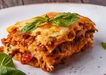

Home
Lasagna

Description
A rich, comforting classic homemade lasagna layered with savory meat sauce, creamy ricotta, tender pasta sheets, and melted mozzarella cheese.
Ingredients
- 12 lasagna noodles
- 1 pound ground beef
- 1/2 pound Italian sausage
- 1 medium onion, diced
- 3 cloves garlic, minced
- 1 jar (24 ounces) marinara sauce
- 1 can (15 ounces) crushed tomatoes
- 15 ounces ricotta cheese
- 1 large egg, beaten
- 3 cups shredded mozzarella cheese
- 1/2 cup grated Parmesan cheese
- 2 tablespoons fresh parsley, chopped
- Salt and black pepper to taste
Steps
- Preheat your oven to 375°F (190°C) and bring a large pot of salted water to a boil.
- Cook the lasagna noodles according to the package instructions, then drain and set aside.
- In a large skillet over medium heat, brown the ground beef, Italian sausage, diced onion, and garlic until the meat is fully cooked; drain excess fat.
- Stir the marinara sauce, crushed tomatoes, salt, and black pepper into the skillet, then simmer for 15 minutes.
- In a medium bowl, mix together the ricotta cheese, beaten egg, Parmesan cheese, and chopped parsley.
- Spread a thin layer of meat sauce on the bottom of a 9x13-inch baking dish, then layer noodles, ricotta mixture, mozzarella cheese, and meat sauce.
- Repeat the layers twice more, finishing with a generous layer of meat sauce and remaining mozzarella cheese on top.
- Cover with foil and bake for 25 minutes, then uncover and bake for an additional 20 minutes until the cheese is bubbly and golden brown.
- Let the lasagna rest for 15 minutes before slicing and serving.